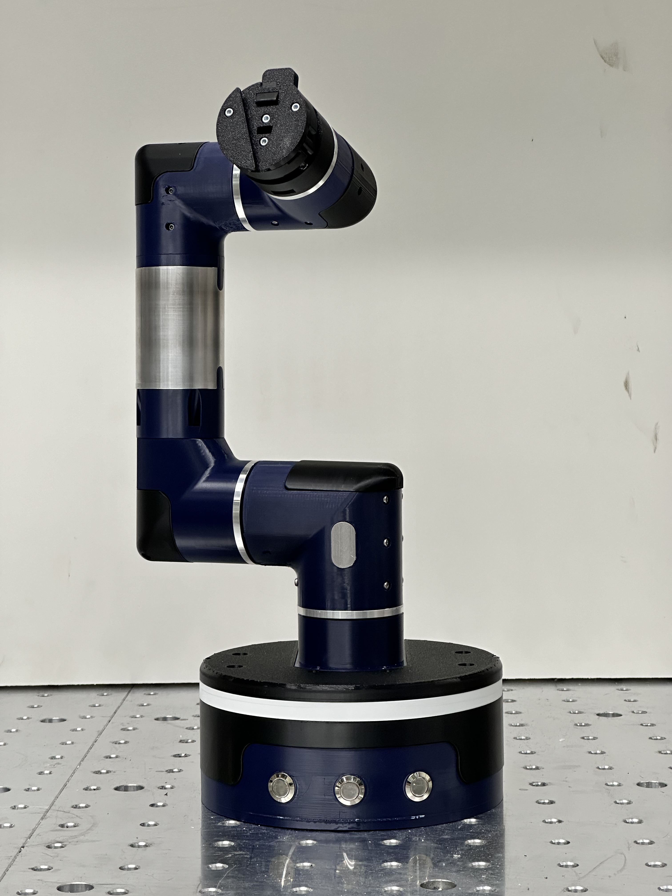
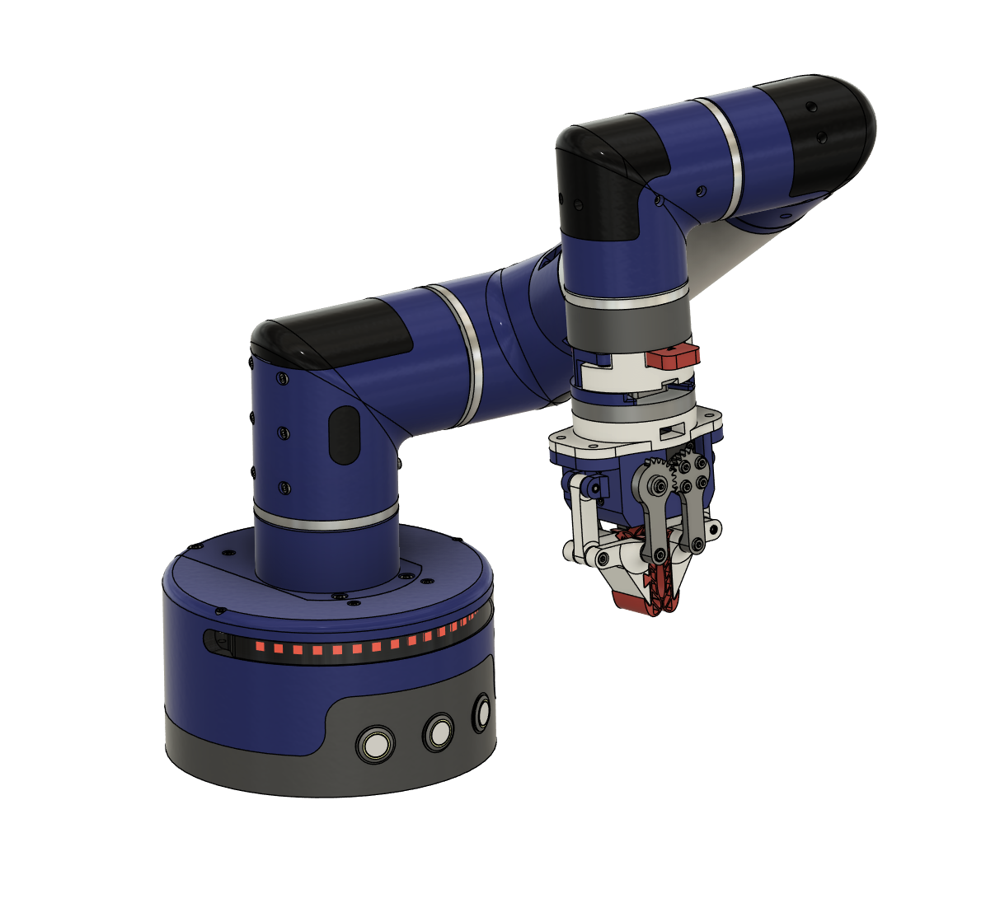
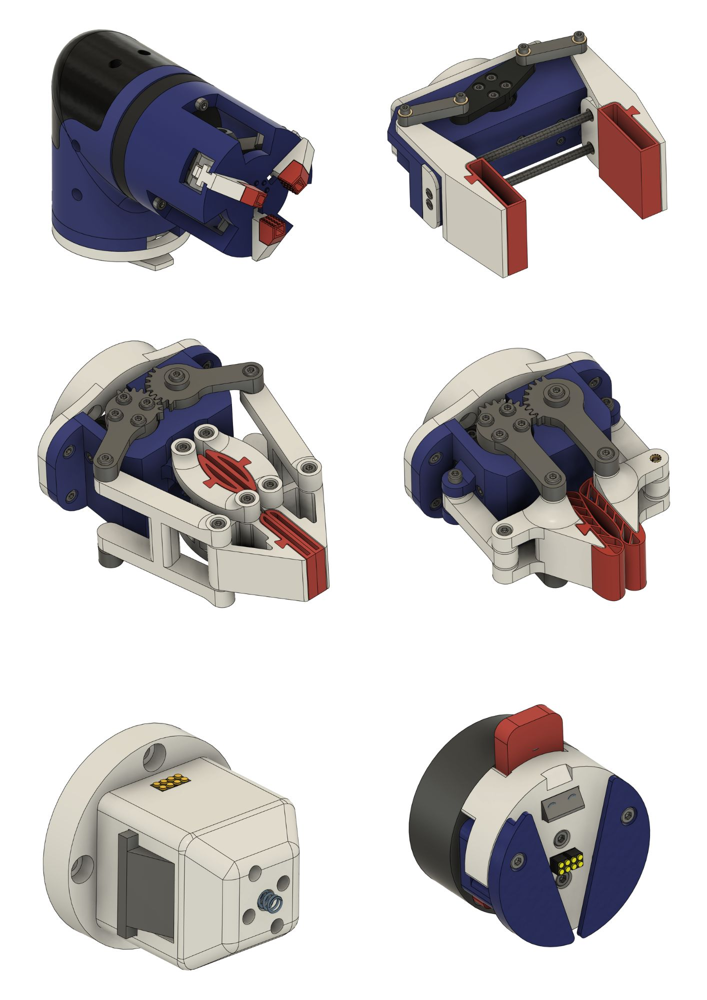
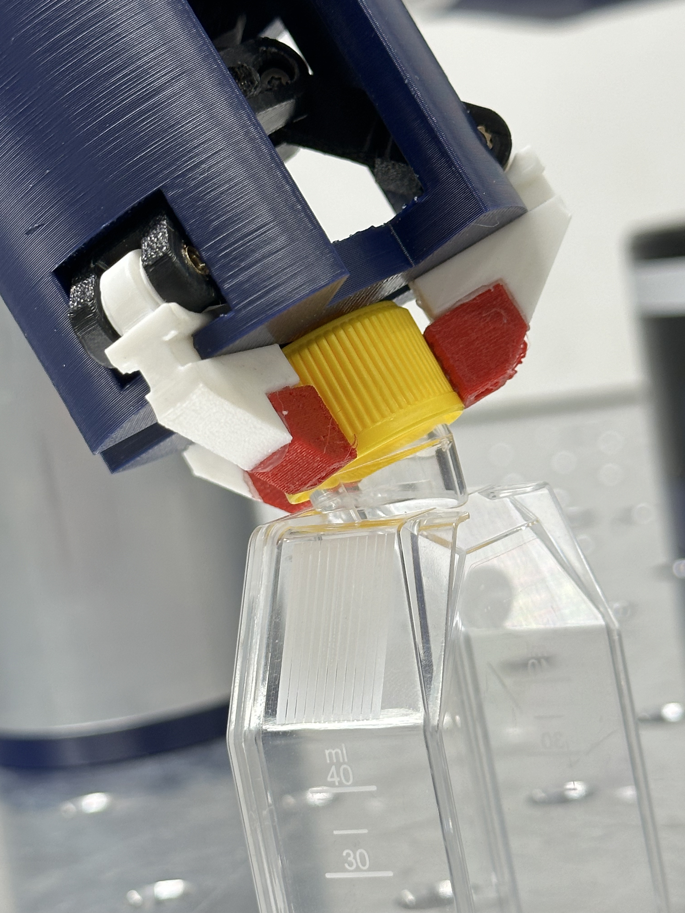
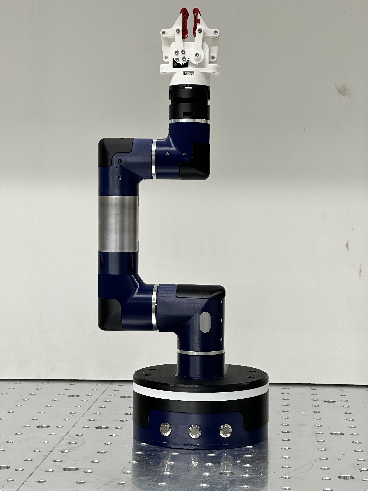

Low-Cost Robot Arm Modules
Bachelor thesis on the design of modules for low-cost robot arms. The project combined requirements analysis, CAD-based mechanical design, modular interfaces, switching concepts, end-effector development, and evaluation of functionality, assembly, and manufacturability.

Overview
This bachelor thesis focused on the design of modules for low-cost robot arms. The work included the development of active modules, a base module, passive modules, switch mechanisms, and different end-effector concepts. A central goal was to make the system more modular, easier to assemble, and more practical to use.
The project also investigated how the robot could be adapted for laboratory-style handling tasks. This required analyzing possible use cases, defining requirements, developing mechanical concepts, and evaluating how individual modules could work together as part of one coherent robotic platform.
My contribution
I worked across the development process, from understanding the limitations of previous robot versions to developing new mechanical concepts and evaluating the resulting modules. The work combined product-development thinking with practical CAD design and prototyping.
- Evaluated previous robot versions and gathered requirements for the redesign.
- Developed modular robot components and interfaces for improved assembly and interchangeability.
- Designed end-effector concepts for application-oriented handling tasks.
- Worked on switch mechanism concepts for interchangeable tooling.
- Considered mechanical stability, bearing selection, load transfer, cable routing, and accessibility.
- Evaluated concepts regarding functionality, assembly, modularity, and manufacturing cost.
Engineering challenges
Modularity and interfaces
- The robot needed standardized interfaces so modules and end-effectors could be exchanged more easily.
- Connections had to support mechanical loads while still allowing practical assembly and disassembly.
- Cable routing and access to screws had to be considered as part of the interface design.
- The design needed to remain cost-conscious and manufacturable for a low-cost robot platform.
End-effectors and switching
- Different handling tasks required different end-effector concepts.
- The switch mechanism had to support interchangeable tooling in a compact and reliable way.
- The end-effectors needed to be mechanically compatible with the robot architecture.
- The concepts had to balance functionality, simplicity, assembly, and manufacturability.
Design highlights




What I learned
This project gave me practical experience in structured product development for robotics. It required moving from requirements and use cases to modular mechanical concepts, CAD design, assembly considerations, and evaluation of different design directions.
The most valuable learning was how strongly module interfaces influence the usability of a robotic system. Even when individual modules work well, the overall system only becomes practical when assembly, cable routing, accessibility, and interchangeability are considered from the beginning.
Outcome
The thesis resulted in a set of developed robot modules, switching concepts, and end-effector designs for a modular low-cost robot arm platform. The work improved my understanding of robotics hardware, modularity, mechanical interfaces, end-effector design, and cost-conscious product development.